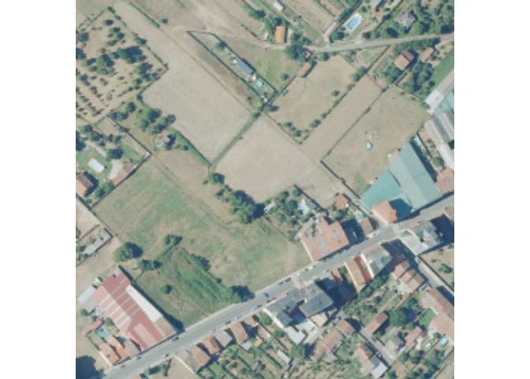
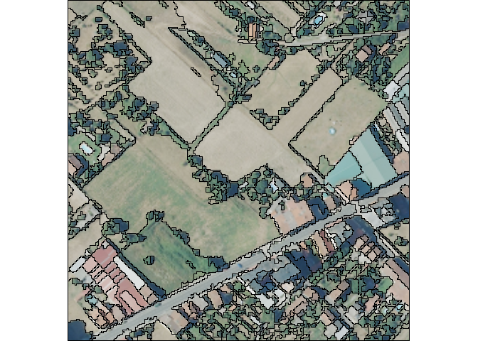

OTBsegm is an R package that provides a user-friendly interface to the unsupervised image segmentation algorithms available in Orfeo ToolBox (OTB), a powerful open-source library for remote sensing image processing. OTBsegm is built on top of link2GI R package, providing easy access to image segmentation algorithms.
To use {OTBsegm}, you must first install OTB on your machine. Once OTB is installed and properly linked through {link2GI} (see examples), this package allows you to easily integrate OTB’s segmentation algorithms into your workflows.
Installation
You can install the development version of OTBsegm from GitHub with:
# install.packages("pak")
pak::pak("Cidree/OTBsegm")Example
We will see how to segment an image included in the package:
## load packages
library(link2GI)
library(OTBsegm)
library(terra)
#> Warning: package 'terra' was built under R version 4.4.3
#> terra 1.8.29
## load image
image_sr <- rast(system.file("raster/pnoa.tiff", package = "OTBsegm"))
## visualize
plotRGB(image_sr)
The image is a 500x500 meters RGB tile, with a spatial resolution of 15 cm in Galicia, Spain. The meanshift algorithm has the next important arguments:
spatialr: spatial radius of the neighborhood
ranger: range radius defining the radius (expressed in radiometry unit) in the multispectral space
minsize: minimum size of a region (in pixel unit) in segmentation. Smaller clusters will be merged to the neighboring cluster with the closest radiometry. If set to 0 no pruning is done. The image’s resolution is 1.2 m, therefore, a value of
minsize = 10means that the smallest segment will be .
In order to use the algorithms, we need to link our OTB installation using {link2GI}:
otblink <- link2GI::linkOTB(searchLocation = "C:/OTB/")Once we are connected, we can apply the segmentation algorithm and visualize the results:
results_ms_sf <- segm_meanshift(
image = image_sr,
otb = otblink,
spatialr = 5,
ranger = 25,
maxiter = 10,
minsize = 10
)
#> Reading layer `filecfc6b37181f' from data source
#> `C:\Users\User\AppData\Local\Temp\RtmpAjZLFx\filecfc6b37181f.shp'
#> using driver `ESRI Shapefile'
#> Simple feature collection with 811 features and 1 field
#> Geometry type: POLYGON
#> Dimension: XY
#> Bounding box: xmin: 621000 ymin: 4708385 xmax: 621300 ymax: 4708685
#> Projected CRS: ETRS89 / UTM zone 29N
plotRGB(image_sr)
plot(sf::st_geometry(results_ms_sf), add = TRUE)